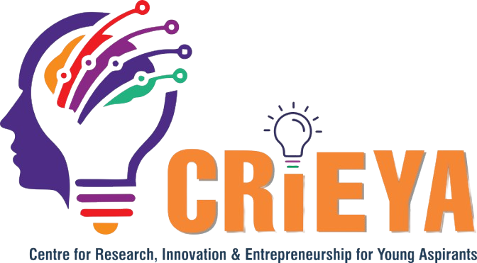

01
Research with purpose
Explore meaningful problems and build a stronger foundation for ideas that can make a difference.
↗
A launchpad for curious minds to research boldly, experiment early, and turn promising ideas into real-world solutions.
Innovation begins when a question becomes an experiment.
CRiEYA — the Centre for Research, Innovation & Entrepreneurship for Young Aspirants — helps nurture an ecosystem where student and faculty ideas can grow into prototypes, products and ventures.
We connect creative thinking with practical experimentation, helping innovators move beyond the concept stage and work towards solutions for real-world challenges.
See what drives us ↗Turn knowledge into action.
Turn experiments into possibilities.
Innovation isn’t a single breakthrough. It’s a process of asking better questions, testing assumptions and improving what works.
Explore meaningful problems and build a stronger foundation for ideas that can make a difference.
↗Move from concept to proof of concept through hands-on testing, iteration and learning.
↗Bring students, faculty, mentors and industry perspectives together to strengthen solutions.
↗Shape promising innovations into clearer product opportunities, ventures or pathways to market.
↗Great ideas get stronger when they’re challenged, tested and refined. The journey is designed to keep learning in motion.
Identify a real problem, unmet need or opportunity worth exploring.
IDEATIONChallenge assumptions, test concepts and learn quickly from evidence.
VALIDATIONTranslate the strongest learning into a proof of concept or working prototype.
DEVELOPMENTExplore product development, commercial potential and routes to implementation.
REAL-WORLD IMPACTFail fast. Learn fast. Every experiment can bring an idea closer to a better solution.
CRiEYA’s innovation ecosystem is designed to help promising ideas develop through guidance, experimentation and collaboration.
Start a conversation ↗Get guidance to evaluate an idea and understand the problem from different viewpoints.
Work towards tangible demonstrations and learn through practical experimentation.
Connect with research, makerspaces, labs and collaborators across the university.
Explore product potential, technology transfer and next steps for promising projects.
Specific support, eligibility and funding are subject to CRiEYA’s current guidelines and project review.
Bring your curiosity, a problem you want to solve, or a project you want to take further. The next experiment starts with a conversation.